TOP
ロジねこ
ネコサーチ
インフォメーション
NO LIFE
NO CAT
ロジねこ
rojineco
みんなが撮った路地猫写真
アプリから投稿された写真を掲載しています
ネコサーチ
cat search
大切な家族と、再会するために。
迷子になってしまった猫や保護した猫の情報
迷子猫情報
保護猫情報
各種関連情報
information
省庁・行政機関
都道府県警察における遺失物の公表ページ
厚生労働省 保健所管轄区域案内
環境省 収容動物データ検索サイト
迷子猫の探し方
迷子猫を探し出すコツ – ガジェット通信
猫が帰って来ない・・その時あなたは 迷い猫の探し方 [猫] All About
迷子猫、脱走猫の探し方と防ぎ方 [猫] All About
迷子猫の捜索方法
迷い猫の探し方｜迷い猫、迷子犬のポスター・チラシ制作なら- ねこてっくす
迷子犬・迷い猫の探し方: その１ いつもの散歩コース、ご近所を探す
【第2回】迷子になったとき、最初にするべきこと
迷子掲示板
迷い猫.NET／迷子猫・迷子犬／迷子ペット捜索情報ネット
迷子猫・保護猫掲示板[獣医師広報板]
迷子ネコ掲示板 - 飼い猫を探しています - ネコジルシ
全国迷子犬・猫の掲示板
迷子ペット回覧板[facebookページ]
里親募集サイト
(迷子の猫が保護されている場合もあります。)
猫の里親募集 - NPO法人 東京キャットガーディアン～子猫の里親募集～
もらい猫.NET／猫と犬、その他の動物の里親募集掲示板サイト
『ペットの命』犬・猫 ペットの里親募集＆迷子情報サイト
猫の里親を行っております｜NPO法人ねこ家
猫・里親・募集・掲示板～ペットショップ保健所へ行く前に～
里親さんを待っている猫たち - NPO法人犬と猫のためのライフボート